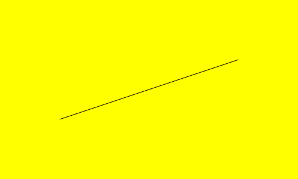
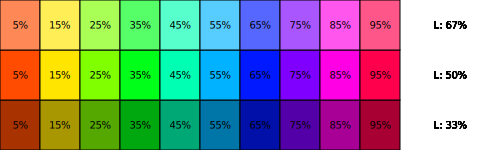
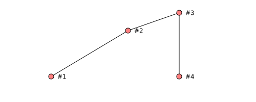
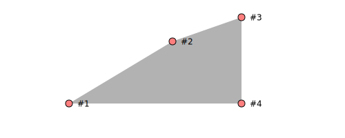
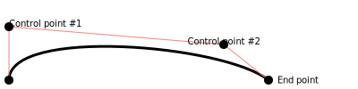
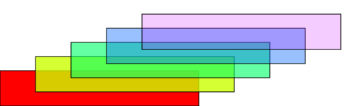
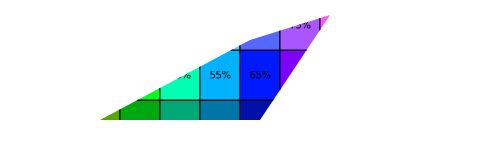

Introduction
Monet is a header-only vector graphics library written in C++11. The aim of Monet is to provide some simple way to produce 2D graphics; it does not aim to implement complex patterns like gradients, transparencies, and so on.
Monet does not have any dependencies other than the standard C library. It has been tested using GCC under Linux, but it should compile with any compiler supporting C11 under any operating system, as it does not implements a GUI: image files are directly written to disk.
At the moment, Monet supports the production of SVG files; other formats, like EPS and PDF, are planned.
You can proceed with the tutorial, or you can directly download the library and start coding:
curl https://raw.githubusercontent.com/ziotom78/monet/master/include/monet.hpp > monet.hpp
Tutorial
The first image
The first program we are going to write will use Monet to create a SVG image containing a rectangle and a diagonal line.
Create an empty directory somewhere with name tut01, and install the
Monet header file in it with the following command:
curl https://raw.githubusercontent.com/ziotom78/monet/master/include/monet.hpp > monet.hpp
(Of course, you can use wget or any other downloader.) Now use your
favourite editor to create the following C++ file, and name it
tut01.cpp:
#include "monet.hpp"
using namespace monet;
int main() {
SVGCanvas canvas("tut01.svg", 500, 300);
canvas.setfillcolor(yellow);
canvas.rectangle(Point(0, 0), Point(500, 300), Action::Fill);
canvas.setstrokecolor(black);
canvas.line(Point(100, 100), Point(400, 200));
}Compile the program and run it:
gcc -o tut01 tut01.cpp && ./tut01
The result is a new tut01.svg file, which you can open your
favourite web browser; e.g., if you are using Firefox, open it with
the command firefox tut01.svg. You will see the following image
appear within the browser:

Let’s analyze the code line by line. First of all, every class and
function in the library lives within the monet namespace. In this
documentation, we always put put the following statement at the
beginning of the code:
using namespace monet;The first statement in main instantiates a canvas, i.e., a 2D
surface that accepts graphical commands:
SVGCanvas canvas("tut01.svg", 500, 300);The constructor we are using, SVGCanvas saves the plotting commands in
a SVG file. SVG files can be viewed using any Internet browser (e.g.,
Firefox, Chrome, Safari) and edited using vector graphics programs like
Inkscape, Adobe Illustrator, and Corel Draw!.
The second line sets the fill color for any filling operation that
will follow. We are using one of the predefined colors in Monet,
yellow (see the reference for more
color names):
canvas.setfillcolor(yellow);The next line asks Monet to draw a rectangle on the canvas:
canvas.rectangle(Point(0, 0), Point(500, 300), Action::Fill);The rectangle is specified using two opposite corners along one of the diagonals. The order is irrelevant, but for convention we usually specify the bottom-left corner first. The third argument specifies how the rectangle should be drawn:
-
Action::Fill(this case) asks Monet to fill the rectangle with the fill color we have specified; -
Action::Strokedraws the outline of the rectangle. In this case, the stroke color (set using the methodcanvas.setstrokecolor, see below) would be used instead of fill color. -
Action::FillAndStrokefills the rectangle using the fill color and then draws the outline using the stroke color.
Finally, the last two commands set the stroke color to black and draw a line:
canvas.setstrokecolor(black);
canvas.line(Point(100, 100), Point(400, 200));Once the variable canvas goes out of scope (i.e., the program ends),
the file tut01.svg is flushed to disk and closed.
Coordinate system
Monet can create rectangular images, where each point in the image is
located using a Cartesian coordinate system. The bottom-left corner of
the image has always coordinates (0, 0). The coordinates of the
upper-right corner depend on the size of the image, that must be passed
to the constructor. This is what we did in tut01:
SVGCanvas canvas("tut01.svg", 500, 500);This instruction tells Monet that the image will be 500×500 wide, i.e., a square.
In the following example, we use SVGCanvas.text and SVGCanvas.circle
to show the coordinates of a few points in a canvas.
#include "monet.hpp"
#include <cstdio>
#include <vector>
using namespace monet;
int main() {
SVGCanvas canvas("tut02.svg", 500, 500);
std::vector<Point> points{
Point(100, 100), Point(400, 100), Point(100, 400),
Point(400, 400), Point(250, 250),
};
// Draw a border
canvas.setstrokecolor(black);
canvas.rectangle(Point(0, 0), Point(500, 500), Action::Stroke);
// Draw a point and some text for every element in "points"
canvas.setfillcolor(black);
for (auto pt : points) {
canvas.circle(pt, 5, Action::Fill);
char text[64];
sprintf(text, "(%d, %d)", static_cast<int>(pt.x), static_cast<int>(pt.y));
canvas.text(pt + Point(0, canvas.getfontsize()), text,
HorizontalAlignment::Center, VerticalAlignment::Top);
}
}Compile the code as usual; the output will be the following:

You can see that the x and y coordinates increase from left to right, and from bottom to top, like in the Cartesian plane.
Many new concepts are used in this new program:
-
We have used a C `for` loop to iterate the creation of many graphical elements; of course, as Monet is used in C programs, we can use any construct we want to place graphical elements on the canvas.
-
We have used text functions.
-
We have used mathematical operations with the
Pointstructure.
The call to canvas.text passes pt + Point(0, canvas.getfontsize())
as the coordinate where to put the text. Point is a structure that can
be used with a few mathematical operators. In our example, we used the
addition (operator+) in order to shift the text a bit above the
circle. See the reference for more information.
The amount of vertical shift is given by the result of a call to
canvas.getfontsize(), which returns the height of a character of text.
Had we avoided this fix, like here:
canvas.text(pt, text, HorizontalAlignment::Center, VerticalAlignment::Top);the result would have been uglier:
Fun with colors
There are several ways to specify colors in Monet:
-
Use one of the predefined constants, like
black,yellow,darkred,lightgreen, etc.; -
Specify a color using its RGB (red-green-blue) components;
-
Specify a shade of gray;
-
Specify a color using its HSL (hue-saturation-lightness) components.
Here is an example:
Color color1 = black;
Color color2 = rgb(0.5, 1.0, 0.5);
Color color3 = gray(0.7);
Color color4 = hsl(0.3, 0.5, 0.75);RGB and HSL use three floating-point numbers in the range [0, 1] to
specify colors. In the example above, color2 is a color made 50% of
red, 100% of green and 50% of blue: a light green. We will not spend
much time about RGB colors, as they are widely used and plenty of
explanations can be found on the web (by the way, it is the standard way
to encode colors in HTML). Gray shades can be specified using the gray
function, wich accepts a number in the range [0, 1] representing the
luminosity of the shade (0 is black, 1 is white).
Color color4 is specified using its hue, saturation, and luminosity
components. This is a somewhat more physical way of identifiying a
color, but it is user far less than RGB, so we will spend some more time
on it. The three numbers used to define color4 have the following
meaning:
-
The hue is at one third of the distance between red (0) and blue
-
in the electromagnetic spectrum (it is a measure of the wavelength of monocromatic light);
-
The saturation is halfway (50%) between gray and the fully bright hue;
-
The luminosity is 75% between black (0%) and white (100%).
Playing with luminosity helps in making the images lighter or darker. Note that if luminosity is 0, the color is black regardless of hue and saturation; similarly, the color is always white if luminosity is 1.
Here is an example of the shades you can get by playing with the hue and the saturation:
#include "monet.hpp"
#include <cstdio>
using namespace monet;
int main() {
const double width = 500;
const double height = 150;
SVGCanvas canvas("tut03.svg", width, height);
canvas.setfontsize(10);
// Width of the colored rectangle bar on the right
const int leftside = width * 0.8;
const int rightside = width - leftside;
const int hue_nsteps = 10;
const double square_height = height / 3;
// Use a fixed saturation for all the squares
const double saturation = 1.0;
// Draw three rows of squares
const std::vector<double> lightness_levels{0.33, 0.50, 0.67};
for (size_t row_num = 0; row_num < lightness_levels.size(); ++row_num) {
double lightness = lightness_levels[row_num];
// Inner loop: draw one row
for (double hue_step = 0; hue_step < hue_nsteps; ++hue_step) {
double hue = (hue_step + 0.5) / hue_nsteps;
canvas.setfillcolor(hsl(hue, saturation, lightness));
// Plot the colored rectangle
Point p1{hue_step * leftside / hue_nsteps, row_num * square_height};
Point p2{(hue_step + 1) * leftside / hue_nsteps,
(row_num + 1) * square_height};
canvas.rectangle(p1, p2, Action::FillAndStroke);
// Print the hue level over the rectangle
char text[64];
std::sprintf(text, "%.0f%%", hue * 100);
Point textcenter = (p1 + p2) / 2;
canvas.setfillcolor(black);
canvas.text(textcenter, text, HorizontalAlignment::Center,
VerticalAlignment::Center);
// Print the lightness level on the right side of the plot
std::sprintf(text, "L: %.0f%%", lightness * 100);
canvas.text(Point(width - rightside / 2, textcenter.y), text,
HorizontalAlignment::Center, VerticalAlignment::Center);
}
}
}And here is the result:

Note that we are using 100% saturation (colors are bright). Let’s see what happens if we set the saturation to zero:
// Use a fixed saturation for all the squares
const double saturation = 0.0;Here is the result:

All the colors have turned into gray!
The comparison with the previous image reveals that the HSL color space
is not entirely physical, as there are some hues that are significantly
darker than others at the same luminosity (e.g., the blue square in the
L: 33% row is significantly darker than the green square in the same
row), but in the image below all the gray rectangles on the same row
have the same shade. Better color spaces exist (e.g.,
luma), but Monet does not
implement them at the moment.
Paths
Apart from circles and text, Monet is able to draw more complex shapes.
Paths are an important concept: they are built using consecutive calls
to moveto, lineto, and similar functions. Each command builds up a
path without drawing anything; in order to show the path, you must call
either strokepath, fillpath, or fillandstrokepath. Consider this
example:
#include "monet.hpp"
#include <cstdio>
#include <vector>
using namespace monet;
int main() {
SVGCanvas canvas("tut04.svg", 500, 200);
std::vector<Point> points{Point(100, 50), Point(250, 140), Point(350, 175),
Point(350, 50)};
// Draw the path
for (size_t i = 0; i < points.size(); ++i) {
if (i == 0)
canvas.moveto(points[i]);
else
canvas.lineto(points[i]);
}
canvas.strokepath();
// Draw circles and some text on the points along the path
int pointidx = 1;
for (const Point &point : points) {
canvas.setfillcolor(lightred);
canvas.setstrokecolor(black);
canvas.circle(point, 5, Action::FillAndStroke);
char buf[8];
std::sprintf(buf, "#%d", pointidx++);
canvas.setfillcolor(black);
canvas.text(point + Point(canvas.getfontsize(), 0), buf,
HorizontalAlignment::Right, VerticalAlignment::Center);
}
}The code iterates over the point vector, starting with a moveto
instruction (the if (i == 0) branch) and then calling lineto
repeatedly. Finally, the canvas.strokepath() call draws all the lines
together as a single path. In order to make clear how the path was
constructed, the code uses a second for loop to place red dots over
each point and numbers beside them.
Here is the result:

Let’s investigate what would have happened if we used fillpath instead
of strokepath in the code above:
canvas.setfillcolor(gray(0.7));
canvas.fillpath();To “fill” an area, the area should be closed. That’s the reason why
Monet connects the last point (#4) to the first one (#1) before
filling the area:

Using fillandstrokepath would draw the contour and fill it. Note that
in this case the path is not closed:
To make the stroke closed as well, just call closepath before call
fillandstrokepath:
canvas.closepath();
canvas.setfillcolor(gray(0.7));
canvas.fillandstrokepath();
Monet provides a handy function to quickly draw paths made by several
points: the drawpath function. Instead of the following code:
std::vector<Point> points{Point(100, 50), Point(250, 140), Point(350, 175),
Point(350, 50)};
// Draw the path
for (size_t i = 0; i < points.size(); ++i) {
if (i == 0)
canvas.moveto(points[i]);
else
canvas.lineto(points[i]);
}you can pass points to canvas.drawpath:
std::vector<Point> points{Point(100, 50), Point(250, 140), Point(350, 175),
Point(350, 50)};
// Draw the path
canvas.drawpath(points);Of course, a call to canvas.drawpath must be followed by a call to
canvas.strokepath or canvas.fillpath to have an effect.
Curved paths
Paths can be curved too. The first type of curved path is a quadratic
curve, to be specified using the quadraticto method. In this case,
you must provide two points: the target'' point and the end'' point:
#include "monet.hpp"
#include <cstdio>
#include <vector>
using namespace monet;
int main() {
SVGCanvas canvas("tut05.svg", 400, 100);
std::vector<Point> points{Point(10, 10), Point(200, 70), Point(300, 10)};
// Quartic curve, shown using a thick black line
canvas.setstrokewidth(3);
canvas.setstrokecolor(black);
canvas.moveto(points[0]);
canvas.quadraticto(points[1], points[2]);
canvas.strokepath();
// Clear the current path and start a new one
canvas.clearpath();
// Draw a light red line that crosses the three points
canvas.setstrokewidth(1);
canvas.setstrokecolor(lightred);
canvas.moveto(points[0]);
canvas.lineto(points[1]);
canvas.lineto(points[2]);
canvas.strokepath();
// Plot circles where each point stands
canvas.setfillcolor(black);
for (Point pt : points) {
canvas.circle(pt, 5, Action::Fill);
}
// Finally, add some text
canvas.setfontsize(10);
canvas.text(points[1] + Point(0, 10), "Target point",
HorizontalAlignment::Center);
canvas.text(points[2] + Point(10, 0), "End point", HorizontalAlignment::Right,
VerticalAlignment::Center);
}
A more versatile curve is the cubic curve, which requires to specify two control points together with the end point:
std::vector<Point> points{Point(10, 10), Point(10, 70), Point(250, 50),
Point(300, 10)};
// Cubic curve, shown using a thick black line
canvas.setstrokewidth(3);
canvas.setstrokecolor(black);
canvas.moveto(points[0]);
canvas.cubicto(points[1], points[2], points[3]);
canvas.strokepath();
Transparencies
It is possible to make graphical elements partially transparent, using
the settransparency function.
#include "monet.hpp"
using namespace monet;
int main() {
SVGCanvas canvas("tut07.svg", 500, 150);
Point pt1(0, 0);
Point pt2(280, 50);
for (double tr = 0.0; tr < 1.0; tr += 0.2) {
canvas.settransparency(tr);
canvas.setfillcolor(hsl(tr, 1.0, 0.5));
canvas.rectangle(pt1, pt2, Action::Fill);
canvas.settransparency(0.0);
canvas.setfillcolor(black);
canvas.rectangle(pt1, pt2, Action::Stroke);
pt1 += Point(50, 20);
pt2 += Point(50, 20);
}
}The code above produces a set of rectangles, starting from a fully opaque red color to a 80% transparent violet hue. Note that the border of the rectangles has no transparency.

Transformations
Besides basic graphical commands like circles and rectangles, Monet implements a transformation pipeline that allows to apply a number of operations to graphical commands. Currently, the following operations are supported:
-
Rotations (
BasicCanvas::rotate) -
Translation (
BasicCanvas::translate) -
Scale transformations (
BasicCanvas::scale,BasicCanvas::scalex,BasicCanvas::scaley)
You can apply a sequence of transformations to groups, which are
sequences of graphical commands enclosed within a call to
BasicCanvas::begingroup and BasicCanvas::endgroup.
The following example shows how to apply rotations to some text:
SVGCanvas canvas("tut08.svg", 500, 150);
Point pivot(250, 75);
for (double angle = 0; angle < 360; angle += 30) {
// First rotate, then translate
canvas.begingroup(rotate(angle) | translate(pivot));
canvas.setfillcolor(hsl(angle / 360, 1.0, 0.4));
// Note that the position of the text is (0, 0)
canvas.text(Point(0, 0), "Hello, world!");
canvas.endgroup();
}
// Paint the pivot point as a black circle
canvas.setfillcolor(black);
canvas.circle(pivot, 5, Action::Fill);
The example builds 12 groups, each containing a text object with content
Hello, world!. In the call to begingroup (which must always be
matched by a call to endgroup), we specify a composite transformation
using the operator |: the operation rotate(angle) | translate(pivot)
means that for each graphical element drawn within the calls to
canvas.begingroup and canvas.endgroup (in our case, the call to
canvas.text) must be first rotated by an angle angle (in degrees),
and then translated by pivot.x along the x axis and pivot.y along
the y axis.
Transformations are instances of the monet::Transform type, but you
should never instantiate it directly; instead, use one of the following
functions:
-
rotate(angle, pivot) -
rotate(angle)(assume thatpivot = Point(0, 0)) -
translate(point) -
scale(factor),scalex(factor),scaley(factor,scale(factor_x, factor_y)
The operator | applies the sequence of transformations in sequence and
automatically builds a TransformSequence type (ordered list of
transformations). As begingroup expects a TransformSequence instead
of a Transform, if you want to apply one operation instead of a
sequence, you should initialize a TransformSequence object using the
following syntax:
canvas.begingroup(TransformSequence{scale(2)});This will shrink every graphical command in the group twice their size.
Clipping
Monet has the ability to ``clip'' graphical commands, i.e., to disable drawing outside some boundaries. This can be useful in complex drawings, e.g., plots. To perform a clipping operation, you must follow these steps:
-
Call
BaseCanvas::defineclip()(no arguments); -
Call whatever graphical operation you want, like
rectangleandcircle, in order to identify the clipping region. Any graphical operation drawing objects that fall outside the shapes drawn here will be rejected. -
When the path is completed, call
BaseCanvas::endclip()(no arguments). -
You can activate and deactivate clipping by calling
BaseCanvas::useclip()andBaseCanvas::removeclip().
The following example shows how to implement a clipping region made by a complex path:
const double width = 500;
const double height = 150;
SVGCanvas canvas("tut09.svg", width, height);
{
canvas.defineclip();
std::vector<Point> points{Point(100, 30), Point(250, 110), Point(330, 135),
Point(260, 30)};
canvas.drawpath(points);
canvas.strokepath(); // canvas.fillpath() would have been ok as well
canvas.endclip();
}
canvas.useclip();
// Etc.If we copy-and-paste the code from section
Fun with colors after the call to
canvas.useclip(), we get the following result:

Reference
Color
A Color structure represents a color to be used for painting the
canvas. It contains the following fields:
| Field | Type | Meaning |
|---|---|---|
|
|
Red level, in the range [0, 1] (inclusive) |
|
|
Green level, in the range [0, 1] (inclusive) |
|
|
Blue level, in the range [0, 1] (inclusive) |
The preferred way to create a color is via one of the following functions (remember, they are not constructors):
-
rgb(r, g, b)is equivalent toColor{r, g, b}, but it is clearer in stating the color space; -
hsl(h, s, l)initializes the color using the hue, saturation, and luminosity values. In this case too, all the parameters must be in the range [0, 1] (yes, even the hue). The tutorial has a nice explanation of the meaning of each parameter. -
gray(l)initializes the color with a gray shade. It is equivalent tohue(0, 0, l).
The only method provided by the class Color is toHTML, which returns
a string containing the HTML representation of the color. A Color
object can be printed to a stream using the << operator, as shown in
the following example:
Here is an example showing these operators:
#include "monet.hpp"
#include <iostream>
using namespace monet;
int main() {
Color col1 = rgb(1.0, 0.0, 0.5);
Color col2 = hsl(0.6, 0.4, 0.7);
std::cout << "col1 = " << col1 << '\n';
std::cout << "The HTML representation of col1 is '" << col1.toHTML() << "'\n";
std::cout << "col2 = " << col2 << '\n';
std::cout << "The HTML representation of col2 is '" << col2.toHTML() << "'\n";
}And here is the output:
col1 = rgb[1, 0, 0.5] The HTML representation of col1 is '#ff007f' col2 = rgb[0.58, 0.676, 0.82] The HTML representation of col2 is '#93acd1'
Standard colors
The library provides a number of predefined colors:

Fonts
Fonts are specified through the FontFamily enumeration:
| Name | Examples |
|---|---|
|
Garamond, Times New Roman |
|
Arial, Helvetica |
|
Courier |

Point
A Point structure represents a 2D point on the canvas. It contains the
following fields:
| Field | Type | Meaning |
|---|---|---|
|
|
First coordinate |
|
|
Second coordinate |
To initialize a point, you can use one of the following constructs:
-
Point pinitializespto the coordinates(0, 0); -
Point p(1, 2)initializespto the coordinates(1, 2);
The Point structure implements a number of operators:
| Operator | Meaning |
|---|---|
|
Sum two points together |
|
Subtract one point from amother |
|
Scale a point by a number (both |
|
Divide the coordinates of a point by a number |
|
Increment a point using another point |
|
Subtract one point from another |
|
Scale a point by a number in-place |
|
Divide the coordinates of a point by a number in-place |
|
Print the coordinates of the point to a |
Here is an example showing these operators:
#include "monet.hpp"
#include <iostream>
using namespace monet;
int main() {
Point pt1(300, 400);
std::cout << "pt1 is " << pt1 << '\n';
pt1 /= 10;
std::cout << "pt1 is now " << pt1 << '\n';
std::cout << "pt1 scaled by 5 is " << pt1 / 5 << '\n';
Point pt2(100, 200);
std::cout << "The sum of pt1 and pt2 is " << pt1 + pt2 << '\n';
std::cout << "The X component of pt1 + pt2 is " << (pt1 + pt2).x << '\n';
}And here is the output:
pt1 is (300, 400)
pt1 is now (30, 40)
pt1 scaled by 5 is (6, 8)
The sum of pt1 and pt2 is (130, 240)
The X component of pt1 + pt2 is 130Primitives
In Monet’s slang, a primitive is a graphics operation provided by the
canvas. Monet has several primitives, provided by methods of the
BaseCanvas class:
| Method | Shape |
|---|---|
|
A circle |
|
A straight line |
|
A rectangle with its sides aligned with the X and Y axes |
Paths
The BaseCanvas class provides the following methods to
create/modify/draw paths:
| Method | Meaning |
|---|---|
|
Move to a point without drawing anything |
|
Connect the current point to a new point using a straight line |
|
Repeatedly call |
|
As |
|
As |
|
Connect the current point with the first point in the path |
|
Draw the path on the canvas using the color set with
|
|
Close the path if needed, and then fill it with the color
set with |
|
Combination of |
|
Cancel the current path and start a new ones |
A presentation of the commands used to create paths is provided in the tutorial.
Once you have finished with a path, you must call clearpath before
drawing a new one!
Groups
A group is a collection of graphical objects. Its main purpose is to apply a sequence of transformations to each object in the collection.
| Method | Meaning |
|---|---|
|
Start a new group, applying the sequence of
transformations in |
|
Complete the definition of a group started with
|
Any call to begingroup should be followed by a call to endgroup;
however, the library is smart enough to close all the groups that have
been left open when the canvas is going to be destroyed.
Transformations
A transformation can be applied only to groups, and it is implemented
via the type Transform, which is a
union type
(unfortunately, C++11 lacks the support for
algebraic types, and
a class hierarchy would have been too complex and cumbersome to use
here).
The following functions create a Transform object:
| Function | Meaning |
|---|---|
|
Translate by |
|
Rotate by |
|
Rotate by |
|
Scale by a factor |
|
Scale by a factor |
|
Scale by a factor |
|
Scale by a factor |
|
Scale by a factor |
Transformations can be concatenated using the | operator. If you think
of two transformations tr1 and tr2 as two functions f and g, the
C++ expression tr1 | tr2 is equivalent to the mathematical operation
g∘f (function composition; note that the two operators are
reversed). Thus, tr1 | tr2 means: `first apply `tr1 (f), then
apply tr2 (g)''.
Transformations can be passed to begingroup: every object within the
call to begingroup and endgroup will be implicitly transformed by
the sequence of transformations.
Since begingroup expects a TransformSequence, you cannot pass just
one Transform object to it:
// This won't work
canvas.begingroup(rotate(30));Instead, you must explicitly initialize a TransformSequence:
// This is ok
canvas.begingroup(TransformSequence{rotate(30)});Clipping
Check out the tutorial.